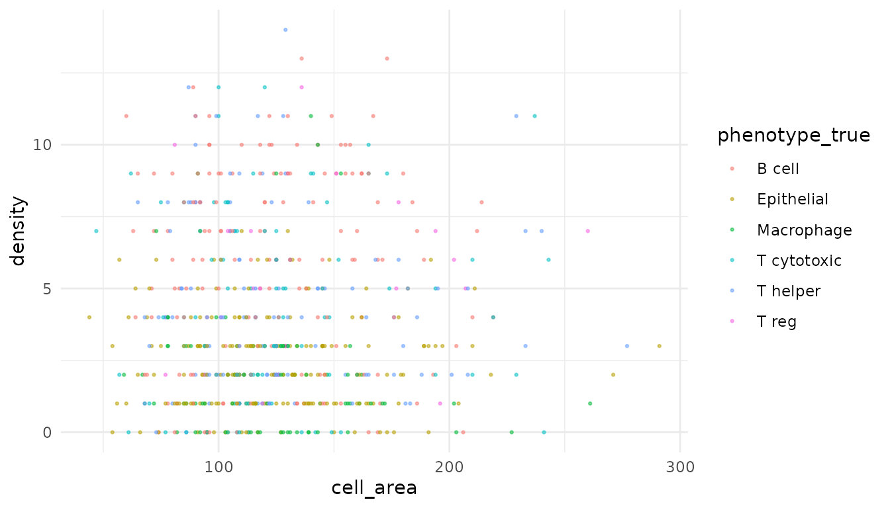
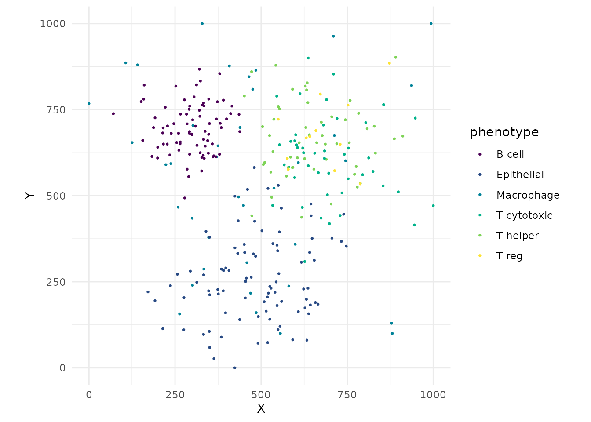
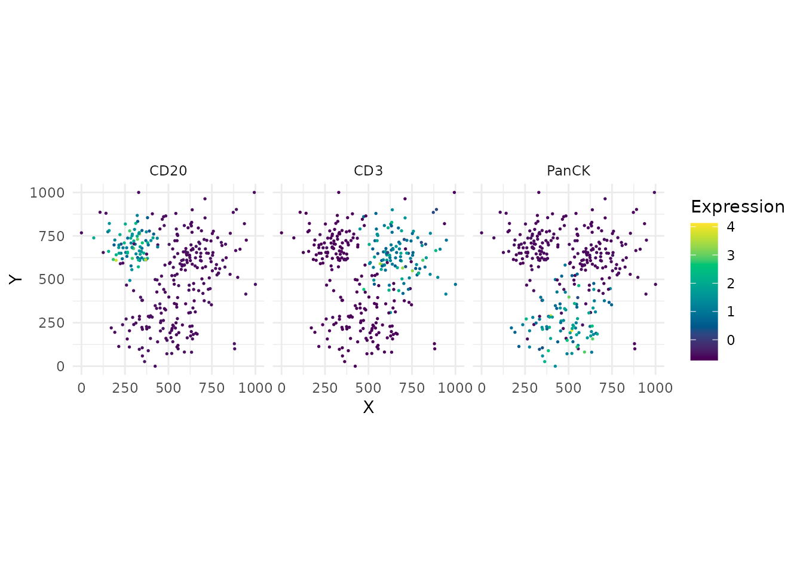
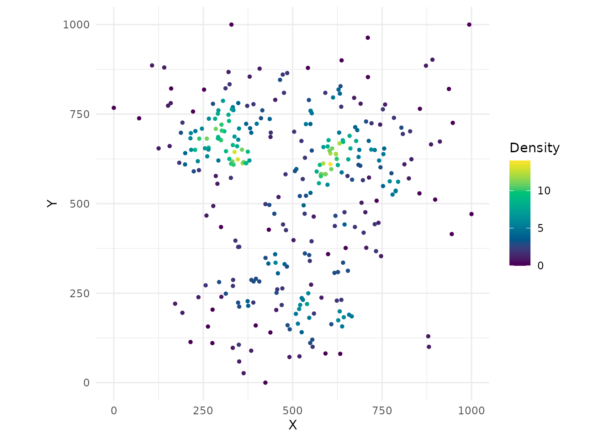
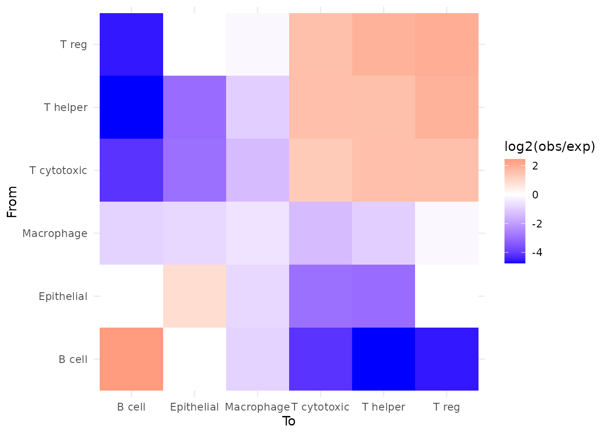

Overview
phenoscapR takes you from a raw multiplexed-imaging cell-segmentation table all the way to publication-ready spatial statistics and figures. The workflow mirrors the way single-cell analysts already think:
-
Read segmentation output into a
SpatialCellDataobject - Quality-control cells by area and intensity
- Normalise marker intensities
- Phenotype cells from marker thresholds
- Analyse the spatial arrangement of those phenotypes
- Visualise every step
Every function comes in two flavours: a high-level S4
interface that takes and returns a SpatialCellData
object (used throughout this vignette), and a low-level
data.table interface
(read_spatial(), qc_filter(), …) for
scripting. They share one compute engine, so results are identical.
The bundled example dataset
The package ships phenoscapR_example, a fully synthetic
two-sample tonsil assay with planted spatial niches (a B-cell follicle,
an overlapping T-cell zone, an epithelial region, and scattered
macrophages). It lets every example here run without downloading
anything.
library(phenoscapR)
data(phenoscapR_example)
phenoscapR_example
#> A SpatialCellData object
#> 640 cells across 2 samples
#> Markers: CD3, CD4, CD8, CD20, CD68, ... (8 total)
#> Normalised: FALSE
#> Project: phenoscapR example (tonsil, simulated)It carries 640 cells across two samples and eight markers, plus a
phenotype_true column recording the ground-truth population
of each cell:
table(phenoscapR_example$sample_id, phenoscapR_example$phenotype_true)
#>
#> B cell Epithelial Macrophage T cytotoxic T helper T reg
#> tonsil_A 80 90 38 45 55 12
#> tonsil_B 80 90 38 45 55 12Reading your own data. In practice you would start from
ReadSpatial("segmentation.csv")(or a directory of CSVs). phenoscapR auto-detects QuPath full/minimal exports and flat segmentation tables. Seevignette("phenoscapR-02-object-model")for the object model and import details.
1. Quality control
QCFilter() removes implausibly small or large cells and,
optionally, cells outside an intensity band. We work on a copy so the
original stays intact.
obj <- QCFilter(phenoscapR_example, min_area = 20, max_area = 1000)
obj
#> A SpatialCellData object
#> 640 cells across 2 samples
#> Markers: CD3, CD4, CD8, CD20, CD68, ... (8 total)
#> Normalised: FALSE
#> Project: phenoscapR example (tonsil, simulated)Use QCPlot() to inspect what was kept against any two
metadata columns:
obj <- CellDensity(obj, radius = 40)
QCPlot(obj, x = "cell_area", y = "density", colour_by = "phenotype_true")
2. Normalisation
NormaliseData() rescales each marker.
"zscore" centres and scales to unit variance;
"minmax" maps to [0, 1];
"quantile" is rank-based.
obj <- NormaliseData(obj, method = "zscore")
round(GetData(obj)[1:4, ], 2)
#> CD3 CD4 CD8 CD20 CD68 PanCK FoxP3 Ki67
#> [1,] -0.66 -0.36 -0.27 0.56 -0.36 -0.58 -0.28 0.31
#> [2,] 2.02 -0.30 2.96 -0.51 -0.36 -0.58 -0.10 -0.63
#> [3,] -0.67 -0.49 -0.37 -0.58 -0.38 0.72 -0.30 3.14
#> [4,] -0.59 -0.47 -0.39 2.10 -0.30 -0.61 -0.28 0.623. Phenotyping
Assign phenotypes by thresholding normalised markers. Because the
data are z-scored, a threshold of 1 means “at least one
standard deviation above the marker’s mean”.
PhenotypeCells() builds composite labels such as
CD3+/CD4+.
obj <- PhenotypeCells(obj, thresholds = list(
CD20 = 1, CD3 = 1, CD8 = 1, CD4 = 1, CD68 = 1, PanCK = 1, FoxP3 = 1
))
head(PhenotypeSummary(obj))
#> sample_id phenotype count proportion
#> 1 tonsil_A Negative 53 0.165625
#> 2 tonsil_A CD3+/CD8+ 20 0.062500
#> 3 tonsil_A CD20+ 63 0.196875
#> 4 tonsil_A CD68+ 36 0.112500
#> 5 tonsil_A CD3+ 11 0.034375
#> 6 tonsil_A CD4+/FoxP3+ 6 0.018750For the rest of this vignette we use the curated ground-truth populations so the figures stay easy to read:
obj@meta_data$phenotype <- obj@meta_data$phenotype_trueCompositionPlot() shows phenotype proportions per
sample:
CompositionPlot(obj, group_by = "sample_id")
4. The phenotype map
CellMap() is the workhorse plot — every cell drawn at
its tissue position, coloured by phenotype. Spatial structure (the
follicle, the T-cell zone) is immediately visible.
tonsil_a <- obj[obj$sample_id == "tonsil_A", ]
CellMap(tonsil_a)
Colour instead by a continuous marker with
FeaturePlot():
FeaturePlot(tonsil_a, features = c("CD20", "CD3", "PanCK"))
5. Spatial analysis
Local density and nearest neighbours
obj <- FindNeighbours(obj, k = 5)
summary(Meta(obj)$nn_distance)
#> Min. 1st Qu. Median Mean 3rd Qu. Max.
#> 9.245 25.714 35.035 41.044 48.368 209.678
DensityPlot(tonsil_a <- CellDensity(tonsil_a, radius = 40))
Phenotype interactions
InteractionMatrix() counts, per sample, how often each
phenotype pair sits within radius of one another versus
what random mixing would predict. The score is
log2(observed / expected) — positive means attraction,
negative means avoidance. Neighbours are never counted
across samples.
im <- InteractionMatrix(obj, radius = 40)
head(im[order(-im$interaction_score), ])
#> <phenoscapR> Phenotype interaction matrix
#> 4 phenotypes; score = log2(observed / expected)
#> strongest attractions:
#> from to interaction_score
#> B cell B cell 2.446922
#> T reg T reg 1.990115
#> T helper T reg 1.893254
#> T reg T helper 1.893254
#> T cytotoxic T helper 1.579319
InteractionPlot(im)

Where to next
phenoscapR has much more spatial machinery — Ripley’s K, Moran’s I, neighbourhood-enrichment permutation tests, the pair correlation function, Delaunay contact graphs — and a full gallery of plots and dimensionality reductions.
| Vignette | Focus |
|---|---|
| The SpatialCellData Object | class internals, import, accessors, subsetting |
| Advanced Spatial Analysis | Ripley’s K, Moran’s I, enrichment, choosing a statistic |
| Visualisation Gallery | every plotting function, side by side |
Use of LLM tools
Portions of this package were prepared with assistance from large
language model tooling for narrowly defined, non-authorial tasks:
copyediting, prose smoothing, Markdown/LaTeX formatting, scaffolding of
boilerplate files (CI configs, build scripts), code refactoring. The
tools used were Chat AI,
the LLM service of KISSKI (GWDG), and a self-hosted Mistral
Small (24B, Apache-2.0) run locally via Ollama and the ollamar R
package — local inference only, with no data sent to third parties for
the self-hosted model.
All scientific claims, methodological choices, analyses, interpretations, and conclusions are the author’s own. No LLM-generated text was incorporated without review and revision, and every reference was verified against its DOI, arXiv ID, or ISBN.